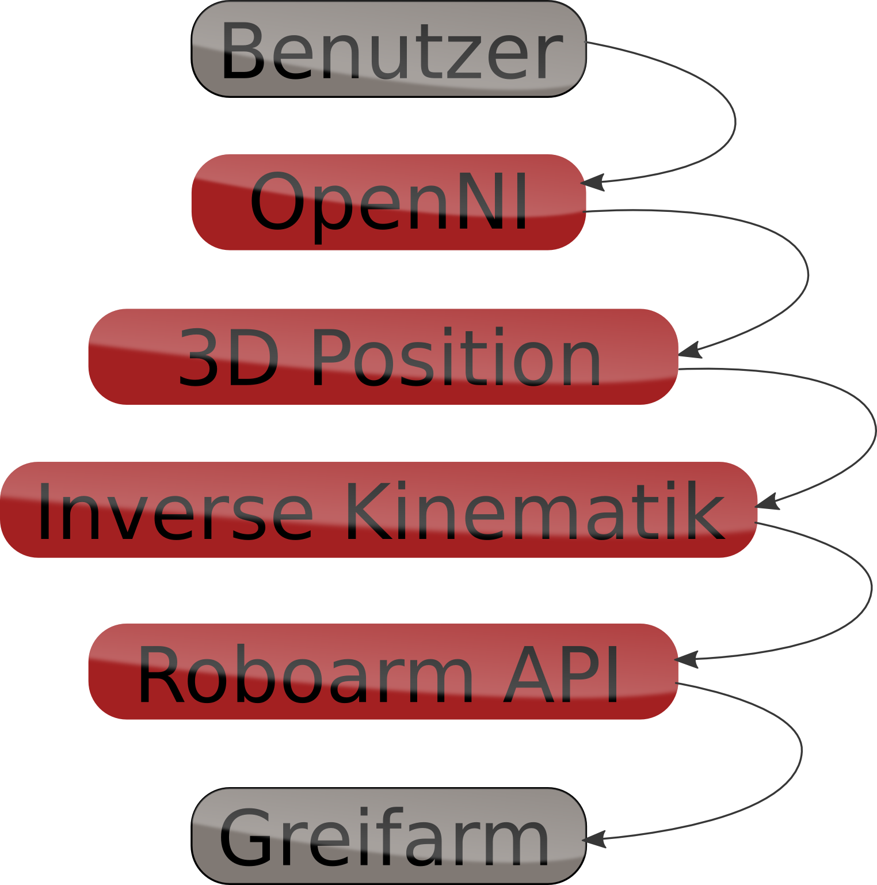
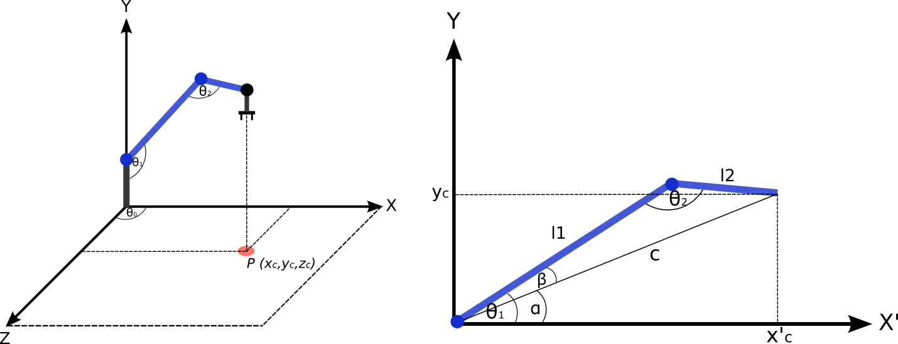
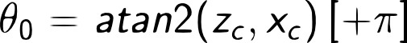

Herzlich Willkommen!
Auf dieser Seite stellen wir, Manuel Dewald und Matthias Hummel, unser Projekt, welches wir im Rahmen eines Softwarepraktikums im
Robotics Lab der Universität Heidelberg durchgeführt haben vor.
Betreut wurde unsere Arbeit von
Felix Aller und
Prof. Dr. Katja Mombaur.
Das Ziel unseres Softwarepraktikums ist die möglichst intuitive Steuerung eines Roboterarms durch die Bewegungserkennung eines Microsoft Xbox 360 Kinect Sensors.
Auf den folgenden Seiten finden Sie einige Informationen über die Funktionsweise sowie die Ergebnisse unseres Projekts:
- Auf der Seite "Medien" finden Sie einige Videos von Arbeitsschritten und dem endgültigen Ergebnis.
- Unter "Vorgehen" können Sie sich darüber Informieren wie die Software im Hintergrund arbeitet, um das gewünschte Ergebnis zu liefern.
- Auf der Seite "Das Projekt" finden Sie die einzelnen Schritte und Meilensteine, welche wir in unserer Projektdurchführung durchliefen und Informationen zu uns als Team.
Wir wünschen viel Spaß auf dieser Seite,
Manuel Dewald und Matthias Hummel
Komponenten im Projekt

Programmablauf
Die Eingabe des Benutzers erfolgt über eine Microsoft Kinect. Diese nimmt den Benutzer auf und mithilfe einer API zur Ansteuerung des Geräts (OpenNI) können die Positionen einzelner Körperteile ermittelt werden.
Um nun die Zielposition der Roboterhand zu bestimmen legen wir ein Koordinatensystem fest. Der Ursprung des Koordinatensystems liegt 20cm nach vorne und rechts versetzt von der Position, welche von der Kinect als Torso erkannt wird. Diese Verschiebung erleichtert die Bedienung erheblich, weil die Kinect bei Bewegungen nahe am Körper zu fehlerhaften Positionen neigt.
Nun berechnen wir die Zielposition, indem wir die Position der Hand des Benutzers relativ zu diesem Koordinatensystem berechnen. Wiederum um die Bedienung zu erleichtern wird die Zielposition in einem Verhältnis von 1:2 zur Handposition berechnet. D.h. wenn der Benutzer seine Hand um 2cm bewegt, bewegt sich der Roboterarm um 1cm. Hierdurch sind feinere Bewegungen intuitiv möglich.
Diese Zielposition muss nun noch in Winkelstellungen umgerechnet werden, da der Roboterarm für jeden Servomotor einen Winkel übertragen bekommt, welcher bei einem update-Befehl anschließend eingenommen wird.
Hierzu werden die Winkel, welche die Inverse Kinematik (siehe nächster Abschnitt) berechnet auf Werte zwischen 0 und 1 abgebildet, abhängig davon, welchen Winkel der Servomotor annehmen soll. Dieser Wert unterscheidet sich von Servomotor zu Servomotor am Roboterarm. Insgesamt verfügt der Arm über 6 Servomotoren die einzeln angesteuert werden können.
Die Inverse Kinematik
Idee: Wie muss die Winkelstellung des Greifarms sein, damit die aktuelle Position der Hand erreicht wird?
Die gewünschte Ziel-Position (roter Punkt) eines Spielers ist gegeben und aus dieser werden die Winkelstellungen berechnet, sodass der Greifarm die Ziel-Position erreicht. Als Ziel-Position werden die aktuellen Koordinaten des rechten Arms verwendet, welche von der Kinect geliefert werden.
Berechnung der Winkel
Für dieses Problem kann eine geometrische Lösung berechnet werden.
Grundlagen: Kosinussatz
Als Grundlage für die geometrische Lösung dient der Kosinussatz:
Mit dem Kosinussatz können alle notwendigen Winkel in der Zeichnung berechnet werden.

Winkel: Rotation θ0:
Der Winkel für die Rotation kann direkt aus den Ziel-Koordinaten berechnet werden.

Winkel: Beugung θ1
Der zweite Winkel benötigt etwas mehr vorarbeit:
Winkel: Beugung θ2
Automatisches Ausrichten des Greifers
Im Single-Player Modus wird der Greifer immer senkrecht zur Ebene ausgerichtet. Dieses Problem kann mit der Winkelsumme eines Rechtecks gelöst werden:
Steuerung mit einem Benutzer
Um den Arm nun als einzelner Benutzer zu steuern, muss man zunächst die Kinect kalibrieren. Dafür stellt man sich in die sogenannte Psi-Pose, bis die Kinect das Skelett des Benutzers erkannt hat. Anschließend kann man mit seinem rechten Arm die Position des Roboters bestimmen. Da der Roboter die Bewegungen schnell und gespiegelt ausführt, ist diese Steuerung sehr intuitiv möglich.
Der Greifer des Roboterarms ist immer senkrecht zum Boden ausgerichtet um das Aufnehmen von Objekten zu ermöglichen. Um ihn zu öffnen oder zu schließen, muss der Benutzer seine Linke Hand in Richtung des Körpers bewegen, bzw. vom Körper entfernen.
Ein Beispiel für die Steuerung von einem Benutzer ist auf der Seite "Medien" zu sehen.
Steuerung mit zwei Benutzern
Der Multi-Player Modus ermöglicht es zwei Spielern gemeinsam den Greifarm zu steuern. Der erste Spieler steuert die Bewegung des Greifarms, also Rotation und Beugung der Gelenke 0-2. Der zweite Spieler ist ausschließlich für den Greifer zuständig. Das beinhaltet die Beugung, Rotation und öffnen/schließen des selbigen.
Der Modus wird automatisch initiiert, wenn ein zweiter Benutzer in das Sichtfeld der Kinect kommt und sich mit der Psi-Pose kalibriert.
Dieser übernimmt anschließend die Steuerung der "Hand" des Roboterarms. Er nimmt beide Hände vor den Körper und kann nun durch Auf- und Abbewegungen der Hände das "Handgelenk" nach oben und unten kippen. Um den Greifer zu drehen, macht der Benutzer einfach eine Drehbewegung mit beiden Händen umeinander. Zum Öffnen und Schließen führt er die Hände zueinander bzw. voneinander weg.
Auch diese Steuerung ist sehr intuitiv. Ebenso wie auch beim Ein-Benutzer-Modus, befindet sich auch hierzu ein Beispielvideo auf der Medienseite.
Das Team
Wir, Matthias Hummel (links) und Manuel Dewald (rechts), sind beide im 3. Semester des Master-Studiengangs "Angewandte Informatik".
Die Begeisterung im Bereich der Computergrafik, Objekterkennung und Automation hat sich bei uns seit einigen Semestern als Schwerpunkt herausgestellt. Durch Vorlesungen wie Computergrafik I und II, Pattern Recognition, Objekterkennung/Computersehen, Künstliche Intelligenz und Data Mining konnten wir vielseitiges Wissen über Grafik bzw. Bildverarbeitung und Erkennung von Mustern im Allgemeinen, sammeln.
Mehrjährige Tätigkeit (Praktikum, Bachelorarbeit, Werkstudent) im Bereich Bildverstehen (Fahrerassistenzsysteme auf Basis von Stereokameras) schulten anhand von praktischer Umsetzung die Methodik der Objekterkennung und das Arbeiten mit kamerabasierten Systemen.
In diesen Arbeiten sowie in einer Studienarbeit im Bereich KI wurden auch Programmierfähigkeiten in C++ erworben.
Der Kinect Greifarm war für uns eine ideale Möglichkeit um die Kentnisse in Software und Methodik mit Erfahrungen in Robotik zu bereichern und erlerntes greifbar auszuprobieren.
Unser Ziel
Ziel des Praktikums ist die Steuerung eines Greifarms mithilfe einer Kinect.
Bestimmte Bewegungsmuster werden von der Kinect erkannt auf einen mechanischen Greifarm übertragen.
Hierzu soll eine Schnittstelle zwischen der Kinect-API und der Steuerung des Roboters implementiert werden.
Die Steuerung des Roboters soll hierbei möglichst intuitiv mit den Armen durchführbar sein:
Der Benutzer stellt sich in den Steuerungsbereich, wird von der Kinect erkannt und kann anschließend mit wenig Übung den Roboterarm an die gewünschte Position bringen und Gegenstände greifen.
Der Projektverlauf/Meilensteine
Einarbeitung in die benötigten Schnittstellen.
Zunächst arbeiteten wir uns in die einzelnen Schnittstellen zur Kinect und zum Roboterarm ein. Als Schnittstelle zur Kinect verwenden wir OpenNI. Der Zugriff auf den Roboterarm erfolgt über Schnittstellen, welche sich im Verlauf vergangener Software-Praktika anderer Studenten immer weiter entwickelten.
Als erste Übung zur Zusammenarbeit von Kinect und Robotergreifarm implementierten wir bereits nach wenigen Arbeitsstunden eine einfache Steuerung eines einzelnen Gelenks über die Position des rechten Arms eines Benutzers. (Siehe Seite "Medien")
Theoretische Entwicklung einer Inversen Kinematik
Zur Steuerung des Armes entschieden wir uns, eine inverse Kinematik zu entwickeln, welche aus der Position der Hand des Benutzers die nötigen Befehle für den Roboter errechnet, anstatt einzelne Gelenke des Menschlichen Armes auf den Roboter zu übertragen.
Hierzu sind einige geometrische Berechnungen nötig welche wir zunächst in zahlreichen Skizzen entwickelten und erst anschließend implementierten.
Desweiteren arbeiteten wir 2 Möglichkeiten aus, wie wir die Bewegung des Handgelenks des Roboters ermöglichen wollten,
da Bewegungen des Handgelenks von der Kinect mit OpenNI noch nicht erkannt werden können.
Umsetzung der Inversen Kinematik
Schließlich haben wir die berechnete Inverse Kinematik in C++ umgesetzt.
Die Anwendung Derselben zeigte uns, dass noch einige Anpassungen am Koordinatensystem der Kinect gemacht werden mussten, um die Bedienung komfortabler und intuitiver zu gestalten.
Nun spiegelt der Roboterarm die Bewegungen des Benutzers, D.h. bewegt der Benutzer seine Hand in Richtung des Roboters, so bewegt dieser die Seine in Richtung des Benutzers. Hierdurch hat der Anwender eine bessere Einsicht in das Aktionsfeld des Roboterarms.
Multi- und Single-Player-Modus, Feinschliff
Um den Greifarm zu öffnen und zu schließen muss der Benutzer seine linke Hand nun zum Körper bzw. vom Körper wegführen.
Der Greifer wird nun im Single-Player-Modus immer senkrecht zum Boden zu gehalten, um das Greifen von Gegenständen möglichst einfach zu machen.
Wir entschieden uns dafür, die Steuerung des Handgelenks in einem 2-Benutzer-Modus zu ermöglichen und das Greifen über das zusammenführen der beiden Hände des zweiten Benutzers zu steuern.